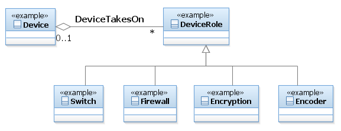

SID Models::Resource Domain::Resource ABE::_Resource Addendum Figuers::Figure LR.15 - Using Roles to Represent Device Functionality Diagram Figure LR.15 - Using Roles to Represent Device Functionality But what about the so-called “Layer 3” switches, which are switches that have routing capability? The method shown above encourages subclassing. For example, this could be done by creating a subclass of Switch, called Layer3Switch, which adds routing capabilities to the Switch. This is a poor solution, because now every time routing changes, we have to update the Router class as well as the Layer3Switch class. Besides, this implies that a Layer3Switch can do everything that a full-blown Router can do, which is almost never the case. There are other problems with this approach too, but this is enough for now.One may also be tempted to use multiple inheritances. If we ignore the fact that multiple inheritance is not always supported when the system is implemented, the problem then becomes one of extensibility. What if there is a “Layer4Switch” (unfortunately, some vendors do label their products like this!)? What if we want to differentiate between the type of routing done in a Router vs. the type of routing done in the Layer3Switch vs. the type of routing done in the Layer4Switch? What if there is a Router that has firewalling capabilities, how is that modeled? There are simply too many permutations to account for using this approach.Instead, a much more elegant and extensible solution is available – we can use the notion of roles. This simplifies our approach tremendously. Instead of trying to either define many subclasses or introduce multiple inheritances, we can instead define a set of roles that the device is meant to play. (Note that if LogicalDevice had not been split out, there would have been nothing to attach the roles to; since LogicalDevice has the conceptualization of being the “brains” of the Resource, attaching roles to LogicalDevice has the connotation of abstracting certain functions that the LogicalDevice controls using one or more roles). Thus, by modeling DeviceRole as a separate concept from Device, we can build subclasses of DeviceRole to model different functions. Then, it’s a simple matter of aggregating the appropriate DeviceRoles to represent the different functions and roles that a particular device can play. We specifically avoid having to subclass Device to do this!

Properties:
View
Name
Figure LR.15 - Using Roles to Represent Device Functionality